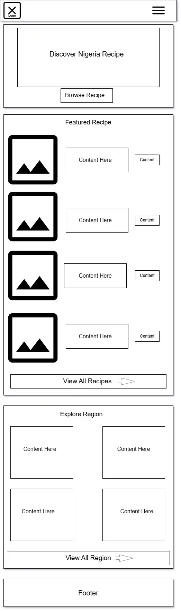
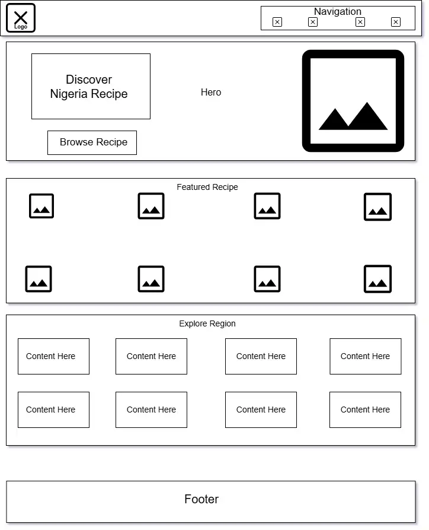

Nigeria Food Recipe Finder | Site Plan
Site Name
Nigeria Food Recipe Finder
This name Nigeria Food Recipe Finder represents a site focused on helping Nigerian users discover, learn, and cook Nigerian dishes.
Proposed Domain: naijafoodfinder.com
Site Purpose
Nigeria Food Recipe Finder
This site will provide information about Nigerian cuisine by showcasing authentic recipes, allowing users to search and filter dishes by region and also with their preparation time, offering the ability to save favorites.
Scenarios
Nigeria Food Recipe Finder
- What are some popular Nigerian recipes I can cook this weekend for my family?
- How do I make Egusi soup and where can I save it for later use?
- I live abroad and miss Nigerian food, what dishes can I easily prepare with ingredients available outside Nigeria?
Color Schema
Nigeria Food Recipe Finder
- Primary Green (#0F4C25) Headings, navigation bar, and primary buttons.
- Rich Amber Gold (#CC7A00) Call-to-action buttons, highlights, hover effects and borders.
- Neutral Background (#FAF9F6) Main content background.
- Dark Text (#222222) Body text and paragraphs for optimal contrast.
- Card Background (--card-bg: #FFFFFF) For content sections and cards so that the page looks dynamically appealing
Typography
Nigeria Food Recipe Finder
- Heading Font: "Playfair Display" (or Georgia) - Used for main headings and recipe titles.
- Body Font: "Poppins" (or system sans-serif) - Used for body text, navigation, and details.
Wireframes
Nigeria Food Recipe Finder
Mobile View

Desktop View
